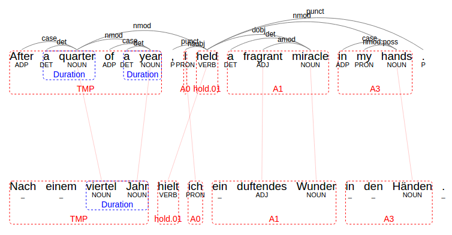
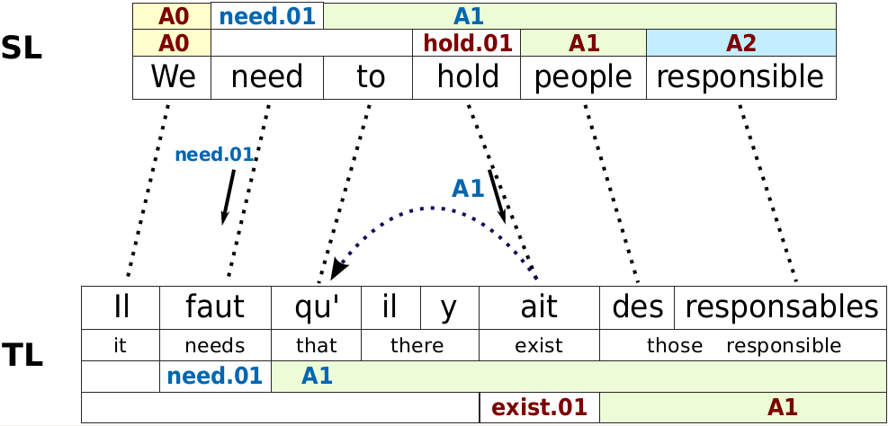
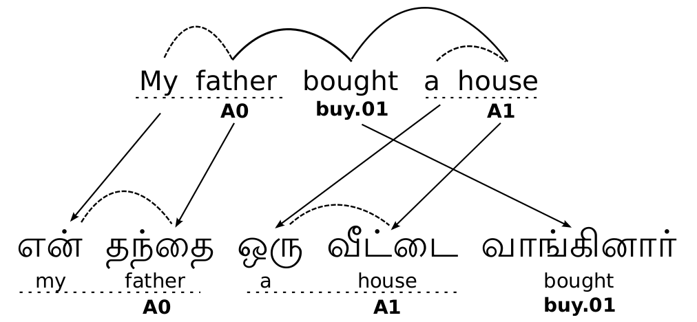

Universal Proposition Banks
One of my main research projects is to semi-automatically create the Universal Proposition Banks, a set of treebanks that enable the training of crosslingual parsers and the study of crosslingual semantics. This effort builds on the Universal Dependencies project and adds a layer of crosslingually unified shallow semantic information.
To illustrate what Universal Proposition Banks are, consider the following sentences:
- Letzte Woche habe ich den Futon bestellt. (German)
- Vahtimestari tilasi taksin. (Finnish)
- 同年12月29日, 美國大陸航空 訂購 10架787. (Mandarin Chinese)

We formalize these crosslingual shallow semantics using Proposition Bank frame and role labels. Check out version 1.0 of the Universal Proposition Banks, publicly available here!
ZAP Annotation Projection Framework
News (16.10.2017): We are publicly releasing ZAP, a multilingual annotation projection and visualization framework! The Java-project is released as a maven project and both available on github as well as maven central. The framework bundles methods for parsing, word alignment, annotation projection and visualization. Please refer to the github page for a full documentation. 
This is a screenshot of an aligned sentence pair with different layers of projected annotation. For the corresponding publication, please refer to:
The Projector: An Interactive Annotation Projection Visualization Tool. Alan Akbik and Roland Vollgraf. 2017 Conference on Empirical Methods on Natural Language Processing, EMNLP 2017. [pdf][video]Two-Step Annotation Projection
We proposed a two-step annotation projection approach to automatically generate the universal proposition banks. In annotation projection, we utilize parallel corpora that consist of English sentences and their translations in a target language. We use an English SRL system to predict English semantic frame and role labels for the English sentences. Then, we project this annotation along word alignments to the target language side. This produces a target language sentence with English frame and role labels.
 In our canonical work, we presented a two-step filtering and bootstrapping approach to address the problem of translation shift in annotation projection (i.e. which occurs when a sentence is translated in a non-literal manner). Using this approach, we auto-generated Proposition Banks for 7 languages. The corresponding publication is:
Generating High Quality Proposition Banks for Multilingual Semantic Role Labeling. Alan Akbik, Laura Chiticariu, Marina Danilevsky, Yunyao Li, Shivakumar Vaithyanathan and Huaiyu Zhu. 53rd Annual Meeting of the Association for Computational Linguistics, ACL 2015. [pdf]
Low Resource Languages
We are also interested in text analytics and semantic parsing over low-resource languages.
 We applied our approach to Bengali, Malayalam and Tamil, three low-resource languages with over 300 million first language speakers - but almost no NLP resources and tools.
We propose a combination of annotation projection, crowdsourcing and limited expert involvement to create NLP resources for low-resource languages in a cost-effective way. The corresponding publication is:
Towards Semi-Automatic Generation of Proposition Banks for Low-Resource Languages. Alan Akbik and Yunyao Li. 2016 Conference on Empirical Methods on Natural Language Processing, EMNLP 2016.
Multilingual Aliasing
We also experimented with expert frame aliasing to attain better mappings between target languages and English frames. To this end, we defined a two-stage process for the curation of automatically determined mappings in which (1) incorrect mappings are manually removed, and (2) synonymous mappings are manually merged. Our experiments show that this significantly increases the quality of generated Universal Proposition Banks, while also increasing the saliency of the frame lexicon. The corresponding publication is:
Multilingual Aliasing for Auto-Generating Proposition Banks. Alan Akbik, Xinyu Guan and Yunyao Li. 26th International Conference on Computational Linguistics, COLING 2016. [pdf]

Alan Akbik
Text and Data Mining
Zalando Research
alan [dot] akbik [ät] zalando [dot] de